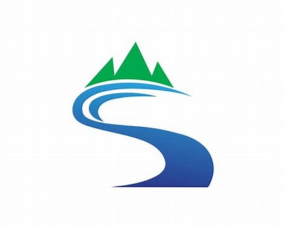
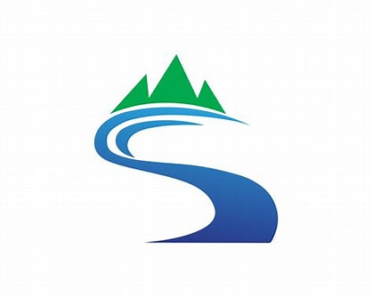

Rivers
Camping

Rapids
More Than Just An Adventure
Enjoy the breathtaking scenery including: valleys, high peaks, meadows and canyons. All in all it's way more than just a white water rafting ride. Way more. It's a way to escape reality and relax in the most sereal nature you've ever seen.